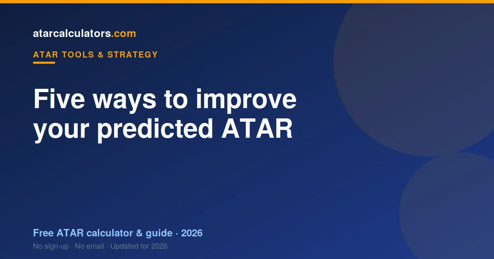

You can improve your predicted ATAR before final exams by focusing where the marks actually move. Target your weakest high-weighting subjects, sharpen exam technique under timed conditions, and concentrate on the topics and skills that gain the most marks. Protect your strong subjects, and stop losing easy marks to careless errors. How much you can rise depends on your starting point and time left, but focused effort in the final months genuinely moves the number.
Key takeaways
- A predicted ATAR is not fixed — focused effort moves it.
- Target your weakest high-weighting subjects first.
- Sharpen exam technique under timed conditions.
- Focus where marks move the most.
- Protect your strong subjects as well as fixing weak ones.
- Stop losing easy marks to careless errors.
- How much you rise depends on your starting point and time left.

Can you improve it before finals?
Yes. A predicted ATAR reflects where you are now, and where you are now can change. The months before finals are often when students improve most, as content consolidates and exam skills sharpen.
The key is to improve where it counts. Random extra study helps less than targeted effort on the subjects and skills that move your marks most. A focused plan beats simply doing more.
So treat your predicted ATAR as a challenge, not a ceiling. The five approaches below are where focused effort pays off before finals.
How much can it realistically rise?
Be realistic: the size of the rise depends on your starting point, your subjects, and how much time is left. A few points is a common, achievable improvement with focused work over the final months.
Larger jumps are possible if you were underperforming relative to your ability, and there is real time to close the gap. But do not expect a transformation from a few weeks of cramming; steady, targeted effort is what moves the number.
The point is that improvement is genuinely on the table. Even a few points can be the difference between missing and meeting a course cutoff, so the effort is well worth it.
1. Target your weakest high-weighting subjects
Not all improvement is equal. A few extra marks in a subject that weighs heavily in your ATAR is worth more than the same effort in one that barely counts. So start with your weakest high-weighting subjects.
These are the subjects where you have the most room to gain and where those gains count most. Lifting a weak subject from mediocre to solid often does more for your ATAR than pushing a strong subject slightly higher.
Use a predictor to see which subjects are dragging your estimate down. Those are your priorities. Fixing the biggest, heaviest weaknesses first is the fastest way to move your number.
2. Sharpen your exam technique
Many students lose marks not from lack of knowledge, but from poor exam technique: misreading questions, running out of time, or answering what was not asked. Fixing this can lift marks without learning any new content.
Practise under timed conditions with real past papers. Learn the command words, how marks are allocated, and how to pace yourself. These skills convert the knowledge you already have into marks on the day.
Exam technique is often the quickest win available, because it does not require mastering more material, just performing better with what you know. For many students it is the single biggest lever.
3. Focus where the marks move most
Within each subject, some topics and skills carry more marks than others. Study is most effective when aimed at the high-value areas you have not yet mastered, rather than re-reading what you already know.
Go through past papers and your trials to see where marks are concentrated and where you keep losing them. The overlap, high-value topics you are weak in, is where your effort pays off most.
This is far more efficient than studying everything equally. A few hours on a high-value weak spot can gain more than a whole day of comfortable revision on your strengths.
4. Protect your strong subjects
Improving weak subjects should not come at the cost of your strong ones. Your best subjects likely contribute most to your ATAR, so letting them slip while you fix weaknesses can cancel out your gains.
Keep your strong subjects ticking over with regular, lighter revision. The goal is to hold your high marks steady while you lift the weaker ones, so your overall estimate rises rather than just shifts around.
Balance is the point. A strong subject that drops because you ignored it is a self-inflicted loss. Protect what is already working while you improve what is not.
5. Stop losing easy marks
Careless errors quietly cost more marks than most students realise: arithmetic slips, skipped question parts, misread instructions. These are the easiest marks to recover, because the knowledge is already there.
Review your trials and past papers specifically for careless losses. Then build habits to prevent them: checking your work, reading questions twice, and managing time so you are not rushing at the end.
Eliminating careless errors can lift your marks across every subject at once, with no new content required. It is unglamorous, but it is some of the cheapest improvement available.
Which subjects to prioritise
Prioritise by impact: weak subjects that weigh heavily in your ATAR come first, then high-value weak topics within your stronger subjects. A predictor helps you see which subjects are holding your estimate back.
Avoid the trap of studying what feels comfortable. The subjects you enjoy revising are often your strong ones, which need protection rather than heavy work. Discipline means spending time where it is hardest and most valuable.
Why technique matters so much
Exam technique deserves special emphasis because it is so often the difference between what students know and what they score. Two students with equal knowledge can finish points apart purely on technique.
Timed practice with past papers is the fastest way to build it. It trains pacing, question interpretation, and the habit of answering exactly what is asked. See using trial results to find your technique gaps.
Making the most of your time
Time is your scarcest resource before finals, so spend it deliberately. A simple plan that allocates more time to high-impact weak areas, and less to comfortable revision, will beat an unstructured grind.
Break study into focused blocks, use past papers heavily, and review what you get wrong rather than re-reading what you know. Deliberate practice on your weaknesses is worth far more than passive hours.
Improve without burning out
Pushing to improve does not mean running yourself into the ground. Sleep, breaks and exercise protect the focus and memory you need to perform. A burnt-out student underperforms, whatever their ability.
So build sustainable habits: steady focused work, real rest, and enough sleep before exams. The goal is to arrive at finals sharp and prepared, not exhausted. Wellbeing is part of performance, not a distraction from it.
Track your progress
To see whether your effort is working, re-run our ATAR predictor as your marks improve. Watching your estimate rise is both a check on your plan and a motivator.
Enter updated marks after each round of practice or assessment. If the number is moving, your plan is working. If not, adjust where you are focusing, using the predictor to find the subjects still holding you back.
Start with a clear plan
Before diving into extra study, spend an hour making a plan. List your subjects, your current marks, and your target marks, then rank the gaps by size and by how much each subject weighs in your ATAR.
That ranking is your priority order. It tells you where the next hour of study will do the most good, which is far more efficient than studying whatever is next in your folder. A plan turns effort into results.
Revisit the plan every couple of weeks as your marks change. A living plan keeps your effort aimed at the biggest, most valuable gaps right up to finals.
The compounding effect of small gains
Improvement rarely comes in one dramatic leap. It comes from small gains across several subjects, which add up. A few marks here from better technique, a few there from a fixed weak topic, and the total moves your ATAR.
This is encouraging, because small gains are achievable. You do not need to transform overnight; you need steady, targeted improvements that accumulate. Across five or six subjects, modest gains in each can lift your estimate by several points.
So do not dismiss small improvements as not worth the effort. Stacked across your program and the weeks before finals, they are exactly what raises a predicted ATAR.
Consistency beats intensity
A steady routine of focused study beats occasional bursts of cramming. Consistent effort consolidates knowledge into long-term memory, which is what you need under exam pressure, while last-minute cramming fades quickly.
So aim for regular, manageable study blocks rather than marathon sessions. Consistency also protects your wellbeing, keeping you sharp for finals rather than burnt out. The tortoise beats the hare in the run up to exams.
Common questions
Can I improve my predicted ATAR before final exams?
Yes. A predicted ATAR reflects where you are now, and focused effort in the final months genuinely moves it. Target weak high-weighting subjects, sharpen exam technique, and focus where the marks move most.
How much can it realistically rise?
A few points is a common, achievable improvement with focused work. Larger jumps are possible if you were underperforming relative to your ability and there is real time left. Steady, targeted effort moves the number more than cramming.
Which subjects should I prioritise?
Your weakest high-weighting subjects first, since a few extra marks there count most, then high-value weak topics within your stronger subjects. Protect your strong subjects rather than letting them slip.
Does exam technique matter?
A great deal. Many students lose marks to poor technique rather than lack of knowledge. Timed practice with past papers builds pacing and question interpretation, converting what you know into marks, often the quickest win available.